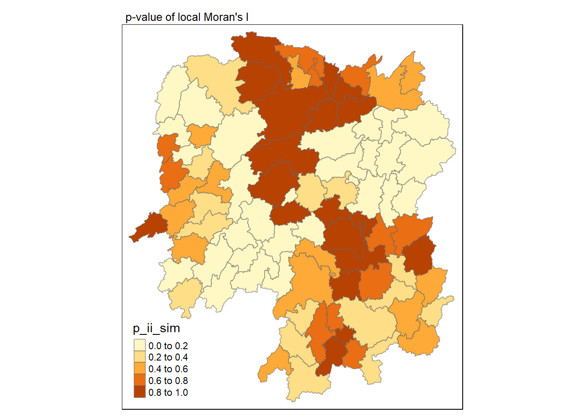
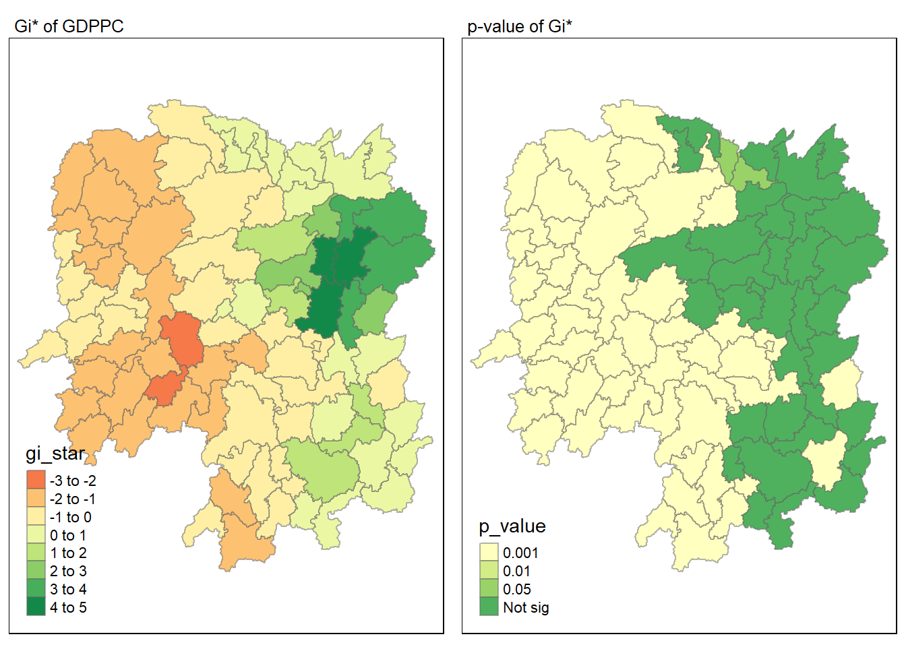

pacman::p_load(sf, spdep, tmap, tidyverse, knitr,sfdep, plotly, zoo)In-class_Ex2_LISA
Overview
Here we will learn how to use sfdep() to calculate the Global and Local measures of spatial association
Loading packages and data
Loading packages
Loading data
Geospatial data
The following uses the st_read() function from the sf package to read the geospatial data.
hunan <- st_read(dsn = "data/geospatial",
layer = "Hunan")Reading layer `Hunan' from data source
`C:\Users\Lian Khye\Desktop\MITB\Geospatial\geartooth\ISSS624\In-class_Ex\Ex2\data\geospatial'
using driver `ESRI Shapefile'
Simple feature collection with 88 features and 7 fields
Geometry type: POLYGON
Dimension: XY
Bounding box: xmin: 108.7831 ymin: 24.6342 xmax: 114.2544 ymax: 30.12812
Geodetic CRS: WGS 84Import attributable table
hunan2012 <- read_csv("data/aspatial/Hunan_2012.csv")Combining the tables
Left join because of joining different data types. Here we retain the hunan dataframe and append the hunan table in order to save the geometry data automatically due to the nature of it being a spatial data.
hunan_GDPPC <- left_join(hunan,hunan2012)%>%
select(1:4, 7, 15)Choropleth Map
Here we will be plotting the choropleth map of the hunan_GDPPC joint data from the previous step.
tmap_mode("plot")
tm_shape(hunan_GDPPC) +
tm_fill("GDPPC",
style = "quantile",
palette = "Blues",
title = "GDPPC") +
tm_borders(alpha = 0.5) +
tm_layout(main.title = "Distribution of GDP per capita by district, Hunan Province",
main.title.position = "center",
main.title.size = 1.2,
legend.height = 0.45,
legend.width = 0.35,
frame = TRUE) +
tm_compass(type="8star", size = 2) +
tm_scale_bar() +
tm_grid(alpha =0.2)
Spatial Weights
Here we will only be using Contiguity Spatial weights
Contiguity Spatial Weights
Here we will first try the contiguity weights using st_contiguity() to obtain the number of neighbours, followed by st_weights() to obtain the the contiguity spatial weights.
Queen’s method
Here we will be using the Queen’s method.
wm_q <- hunan_GDPPC %>%
mutate(nb = st_contiguity(geometry),
wt = st_weights(nb,
style = "W"),
.before = 1)
summary(wm_q)Neighbour list object:
Number of regions: 88
Number of nonzero links: 448
Percentage nonzero weights: 5.785124
Average number of links: 5.090909
Link number distribution:
1 2 3 4 5 6 7 8 9 11
2 2 12 16 24 14 11 4 2 1
2 least connected regions:
30 65 with 1 link
1 most connected region:
85 with 11 links nb wt.Length wt.Class wt.Mode NAME_2 ID_3
NULL:NULL 5 -none- numeric Length:88 Min. :21098
5 -none- numeric Class :character 1st Qu.:21125
4 -none- numeric Mode :character Median :21150
4 -none- numeric Mean :21150
4 -none- numeric 3rd Qu.:21174
5 -none- numeric Max. :21201
4 -none- numeric
7 -none- numeric
6 -none- numeric
8 -none- numeric
3 -none- numeric
5 -none- numeric
4 -none- numeric
3 -none- numeric
4 -none- numeric
5 -none- numeric
7 -none- numeric
5 -none- numeric
6 -none- numeric
7 -none- numeric
5 -none- numeric
5 -none- numeric
7 -none- numeric
5 -none- numeric
5 -none- numeric
4 -none- numeric
3 -none- numeric
5 -none- numeric
3 -none- numeric
1 -none- numeric
8 -none- numeric
8 -none- numeric
5 -none- numeric
3 -none- numeric
6 -none- numeric
6 -none- numeric
4 -none- numeric
4 -none- numeric
5 -none- numeric
6 -none- numeric
6 -none- numeric
7 -none- numeric
6 -none- numeric
4 -none- numeric
6 -none- numeric
3 -none- numeric
5 -none- numeric
5 -none- numeric
4 -none- numeric
5 -none- numeric
3 -none- numeric
5 -none- numeric
3 -none- numeric
6 -none- numeric
5 -none- numeric
7 -none- numeric
6 -none- numeric
5 -none- numeric
4 -none- numeric
4 -none- numeric
7 -none- numeric
3 -none- numeric
4 -none- numeric
2 -none- numeric
1 -none- numeric
5 -none- numeric
4 -none- numeric
5 -none- numeric
3 -none- numeric
3 -none- numeric
3 -none- numeric
5 -none- numeric
5 -none- numeric
6 -none- numeric
6 -none- numeric
7 -none- numeric
7 -none- numeric
7 -none- numeric
7 -none- numeric
8 -none- numeric
6 -none- numeric
5 -none- numeric
9 -none- numeric
6 -none- numeric
11 -none- numeric
9 -none- numeric
4 -none- numeric
2 -none- numeric
NAME_3 ENGTYPE_3 County GDPPC
Length:88 Length:88 Length:88 Min. : 8497
Class :character Class :character Class :character 1st Qu.:14566
Mode :character Mode :character Mode :character Median :20433
Mean :24405
3rd Qu.:27224
Max. :88656
geometry
POLYGON :88
epsg:4326 : 0
+proj=long...: 0
The report shows that there are 88 area units or regions in the Hunan province and the area with the most number of connected neighbours is 11 and the least is 1.
Global spatial computing
Global Moran’s I
Here we will calculate using the global_moran() using the sfdep package, where the output will be a data frame.
moranI <- global_moran(wm_q$GDPPC,
wm_q$nb,
wm_q$wt)
glimpse(moranI)List of 2
$ I: num 0.301
$ K: num 7.64Global Moran’s I permutation
Here will be using the Monte Carlo simulation to perform the statistical test. We will be using the global_moran_perm(). The randomisation will also be seeded to ensure reproducibility.
set.seed(1234)
global_moran_perm(wm_q$GDPPC,
wm_q$nb,
wm_q$wt,
nsim = 99)
Monte-Carlo simulation of Moran I
data: x
weights: listw
number of simulations + 1: 100
statistic = 0.30075, observed rank = 100, p-value < 2.2e-16
alternative hypothesis: two.sidedAs the p-value is smaller than 0.05, we reject the null hypothesis that spatial patterns are independent and together with the Moran’s I value being larger than 0, we can infer that there is clustering.
Local spatial computing
Local Moran’s I
Here we will be using the local_moran() function to calculate the local Moran’s I for each region or county.
lisa <- wm_q %>%
mutate(local_moran = local_moran(
GDPPC, nb, wt, nsim = 99),
.before = 1) %>%
unnest(local_moran)The output will be a data fram containing the ii, eii, var_ii, z_ii, p_ii, p_ii_sim and p_folded_sum.
Visualisation of local Moran’s I
Here we will utilise the ii field for visualisation on a choropleth map.
tmap_mode("plot")
tm_shape(lisa) +
tm_fill("ii") +
tm_borders(alpha = 0.5) +
tm_view(set.zoom.limits = c(6,8)) +
tm_layout(main.title = "local Moran's I of GDPPC",
main.title.size = 0.8)
Visualisation of local Moran’s I with p-value
Here we will utilise the p_ii_sim field for visualisation on a choropleth map.
tmap_mode("plot")
tm_shape(lisa) +
tm_fill("p_ii_sim") +
tm_borders(alpha = 0.5) +
tm_layout(main.title = "p-value of local Moran's I",
main.title.size = 0.8)
Combined visualisation
Here we will place the maps next to each other.
tmap_mode("plot")
map1 <- tm_shape(lisa) +
tm_fill("ii") +
tm_borders(alpha = 0.5) +
tm_view(set.zoom.limits = c(6,8)) +
tm_layout(main.title = "local Moran's I of GDPPC",
main.title.size = 0.8)
map2 <- tm_shape(lisa) +
tm_fill("p_ii",
breaks = c(0, 0.001, 0.01, 0.05, 1),
labels = c("0.001", "0.01", "0.05", "Not sig")) +
tm_borders(alpha = 0.5) +
tm_layout(main.title = "p-value of local Moran's I",
main.title.size = 0.8)
tmap_arrange(map1, map2, ncol = 2)
Visualisation of LISA
Here will will visualise LISA where we can see the presence of outliers and clusters. More information can be found here. The following is a newer method for calculating LISA, and require shorter and more concise steps such as not having to manually form the high-high, high-low, low-high and low-low quadrants. Just make sure that if the data is skewed, we will have to use the median for forming the quadrant.
lisa_sig <- lisa %>%
filter(p_ii < 0.05)
tmap_mode("plot")
tm_shape(lisa) +
tm_polygons() +
tm_borders(alpha = 0.5) +
tm_shape(lisa_sig) +
tm_fill("mean") +
tm_borders(alpha = 0.4)
Hot and cold spot area analysis(HCSA)
HCSA utilise spatial weights to identify hot and cold spots. They refer to areas that have higher or lower value and if they are clustering in relative to their neighbours.
Compute local Gi*
Here we will utilise the inverse distance weight matrix for calculating the Gi* statistics.
The inverse distance weight matrix is as follow.
wm_idw <- hunan_GDPPC %>%
mutate(nb = st_contiguity(geometry),
wts = st_inverse_distance(nb, geometry,
scale = 1,
alpha = 1),
.before = 1)We will then use local_gstar_perm() for calculating Gi* statistics.
HCSA <- wm_idw %>%
mutate(local_Gi = local_gstar_perm(
GDPPC, nb, wt, nsim = 99),
.before = 1) %>%
unnest(local_Gi)
HCSASimple feature collection with 88 features and 16 fields
Geometry type: POLYGON
Dimension: XY
Bounding box: xmin: 108.7831 ymin: 24.6342 xmax: 114.2544 ymax: 30.12812
Geodetic CRS: WGS 84
# A tibble: 88 × 17
gi_star e_gi var_gi p_value p_sim p_folded_sim skewness kurtosis nb
<dbl> <dbl> <dbl> <dbl> <dbl> <dbl> <dbl> <dbl> <nb>
1 0.0416 0.0114 6.41e-6 0.0493 9.61e-1 0.7 0.35 0.875 <int>
2 -0.333 0.0106 3.84e-6 -0.0941 9.25e-1 1 0.5 0.661 <int>
3 0.281 0.0126 7.51e-6 -0.151 8.80e-1 0.9 0.45 0.640 <int>
4 0.411 0.0118 9.22e-6 0.264 7.92e-1 0.6 0.3 0.853 <int>
5 0.387 0.0115 9.56e-6 0.339 7.34e-1 0.62 0.31 1.07 <int>
6 -0.368 0.0118 5.91e-6 -0.583 5.60e-1 0.72 0.36 0.594 <int>
7 3.56 0.0151 7.31e-6 2.61 9.01e-3 0.06 0.03 1.09 <int>
8 2.52 0.0136 6.14e-6 1.49 1.35e-1 0.2 0.1 1.12 <int>
9 4.56 0.0144 5.84e-6 3.53 4.17e-4 0.04 0.02 1.23 <int>
10 1.16 0.0104 3.70e-6 1.82 6.86e-2 0.12 0.06 0.416 <int>
# ℹ 78 more rows
# ℹ 8 more variables: wts <list>, NAME_2 <chr>, ID_3 <int>, NAME_3 <chr>,
# ENGTYPE_3 <chr>, County <chr>, GDPPC <dbl>, geometry <POLYGON [°]>Visualisation of Gi*
Next we will visualise the Gi* on a choropleth map.
tmap_mode("plot")
tm_shape(HCSA) +
tm_fill("gi_star") +
tm_borders(alpha = 0.5) +
tm_view(set.zoom.limits = c(6,8))
Visualisation of Gi* p-value
Here we will visualise the p-value of HCSA
tmap_mode("plot")
tm_shape(HCSA) +
tm_fill("p_sim") +
tm_borders(alpha = 0.5)
Combined visualisation
Here we will combined both maps.
tmap_mode("plot")
map1 <- tm_shape(HCSA) +
tm_fill("gi_star") +
tm_borders(alpha = 0.5) +
tm_view(set.zoom.limits = c(6,8)) +
tm_layout(main.title = "Gi* of GDPPC",
main.title.size = 0.8)
map2 <- tm_shape(HCSA) +
tm_fill("p_value",
breaks = c(0, 0.001, 0.01, 0.05, 1),
labels = c("0.001", "0.01", "0.05", "Not sig")) +
tm_borders(alpha = 0.5) +
tm_layout(main.title = "p-value of Gi*",
main.title.size = 0.8)
tmap_arrange(map1, map2, ncol = 2)
Visualisation of hot and cold spots
Finally we will visualist the hot and cold spots using the significance.
HCSA_sig <- HCSA %>%
filter(p_sim < 0.05)
tmap_mode("plot")
tm_shape(HCSA) +
tm_polygons() +
tm_borders(alpha = 0.5) +
tm_shape(HCSA_sig) +
tm_fill("gi_star") +
tm_borders(alpha = 0.4)